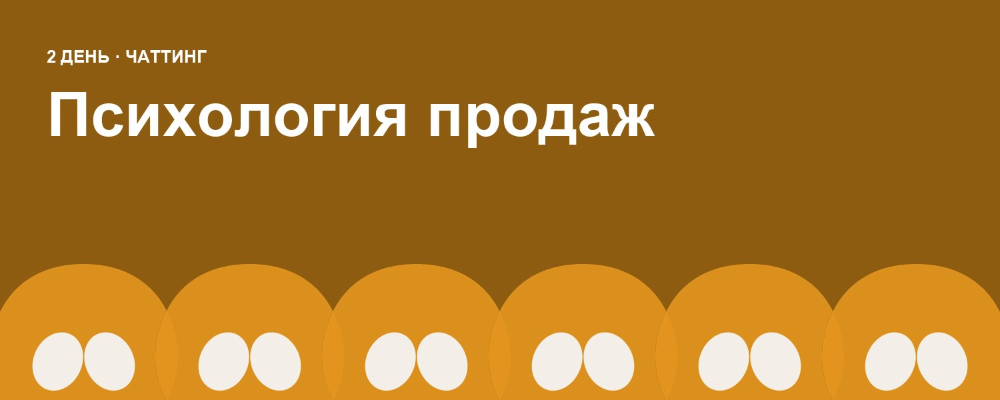
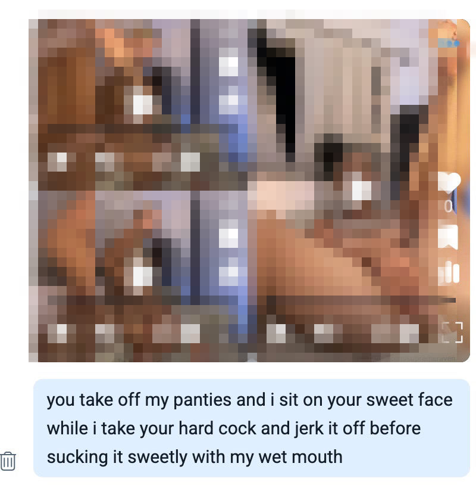
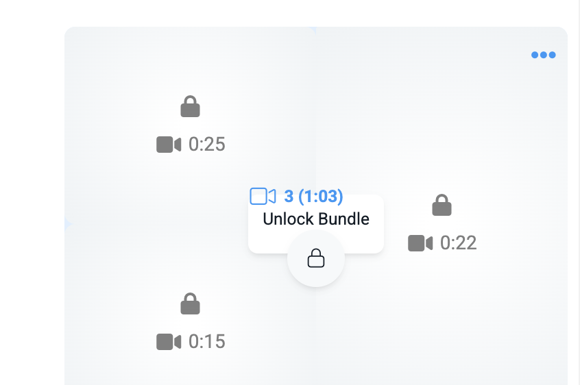
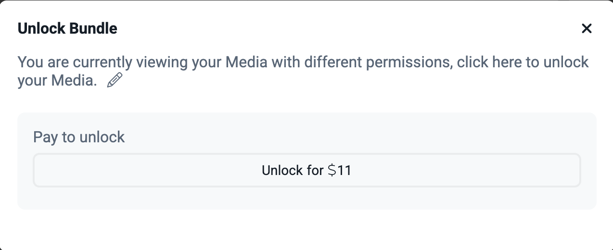
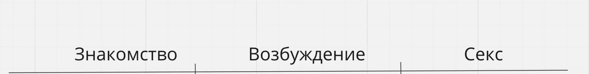

5 урок. Психология продаж
Психология общения: как не быть просто “чаттером”
Хороший чаттер — это не просто человек, который быстро отвечает и кидает фотки. Это оператор, который понимает мотивацию фаната, выстраивает с ним контакт и проводит его до покупки через доверие и вовлечение. Важно помнить, что на Fansly пользователь платит не только за контент, но и за ощущение внимания, уникальности и эмоционального взаимодействия.
📌 Главная цель — не разовая продажа, а привязка
Ориентируйтесь не на быструю продажу «здесь и сейчас», а на долгосрочные отношения с фанатом, которые приносят регулярный доход.
Фан, который чувствует эмоциональный отклик, вернётся.
Фан, которому просто скинули PPV без вовлечения — скорее всего, уйдёт.
Важный ориентир:Краткосрочная продажа может принести $50,
А правильно выстроенное общение — $500+ за 1–2 месяца.
Продажа = доверие + интерес + правильный момент
Продажа в чате — это не прямое предложение, а результат хорошо выстроенного диалога.
Работает только тогда, когда:
- фан чувствует, что его слушают и замечают,
- сообщение построено под него, а не "всем подряд",
- между вами уже есть контакт и эмоциональная динамика.
Важно: не думай, что ты просто оператор
Многие начинающие воспринимают работу как "механическую задачу": ответить, скинуть фото, получить деньги.
Но фанаты приходят не за этим. Они ищут контакт, вовлечение, иллюзию близости.
Не зацикливайся на том, что ты "просто чаттер". Представь, что ты ведёшь виртуальные отношения (общайся как со своим парнем/девушкой):
- будь заинтересованной,
- флиртуй,
- проявляй эмоции,
- говори так, как говоришь с партнёром, который тебе нравится.
📌 Фан может найти откровенный контент бесплатно. Но за внимание, атмосферу и эмоции он готов платить снова и снова.
Именно это — твоя главная сила. Не сухие фразы. А умение быть "настоящей", но с холодной головой и чёткой задачей.
Что такое PPV?
На платформе можно отправлять контент двумя способами: с ценой (PPV) и без неё (бесплатно). Со стороны модели вы будете видеть одинаковое сообщение, но для фаната это два разных типа контента — важно это понимать.
Контент без указания цены — фанат видит его сразу, без оплаты. Такой способ используется в следующих случаях:
- Фанат заранее отправил чаевые, и вы благодарите его ответным контентом.
- Вы отправляете лайф контент (например фото в одежде, из жизни), чтобы усилить эмоциональную связь.
- Тизинг — лёгкие нонюд видео перед продажей чего-то более откровенного.
Бесплатный контент не обесценивает работу, если используется правильно: он помогает разогреть интерес, удержать внимание и показать, что с вами приятно общаться не только за деньги.
Так выглядит у мембера контент без цены:

Когда вы отправляете платный контент (PPV), фанат не видит сам контент до оплаты. Ему отображается только:
- количество фото/видео и общая длительность видео),
- цена,
- текстовое описание, которое вы указали.
Описание под PPV — это ключевой элемент продажи.
Без него фан не понимает, за что платит. Именно описание создаёт интерес и желание открыть.
Так выглядит у мембера контент с ценой:


В некоторых случаях платный контент стоит отправлять с превью (обложкой). Это может быть кадр из видео или нейтральное фото, которое фанат увидит до оплаты. Нонюд!
Что видит фанат при таком способе отправки:
- бесплатное превью,
- цену,
- количество вложений,
- длительность видео,
- описание.
Что такое секстпак/секстинг?
Этот контент, который будет продаваться под видом "живого видеосекса”, который модель будет делать в течении горячего разговора с мембером.
В хранилище контента вы найдете альбомы с названиями вроде “Sext 1”, “Sext 2” и т.д. — это заранее подготовленные тематические сеты для горячих переписок. Каждый такой альбом представляет собой полноценный секстинг-набор, в котором продумана последовательность, внешний вид модели и атмосфера контента.
⚠️ Важно: во время одной продажи нельзя смешивать контент из разных альбомов. Так как формат предполагает, что видео и фото создаются “здесь и сейчас”, резкая смена образа, света или одежды разрушает иллюзию лайв-общения. Это снижает доверие фаната и может повлиять на продажи.
Всегда проверяйте, чтобы весь отправляемый сет был из одного и того же альбома. Это поддерживает реалистичность переписки и помогает сохранить эмоциональную вовлеченность фаната.
Основы эффективного секстинга
Cистема секстинга “From Come to Cum”

Прежде чем переходить к интимной переписке, важно убедиться, что подписчик настроен на неё. Для этого задайте несколько нейтральных, уточняющих вопросов:
- Как проходит день?
- Где ты сейчас?
- В каком ты настроении?
Это не только поможет понять контекст, но и создаст ощущение живого, личного общения.
Не торопитесь — создавайте динамику
Секстинг строится на постепенном нарастании напряжения. Не нужно сразу «в лоб». Начните с лёгкого флирта, обмена селфи и мягких намёков. Когда почувствуете интерес со стороны фаната — усиливайте контакт. Важно создать атмосферу, в которой человек сам захочет углубить общение.
Включайте визуальное мышление
Хороший секстинг — это почти сценарий, где фанат представляет происходящее в деталях. Используйте описательный язык, эмоции, фантазии и ситуации, в которых он может себя вообразить рядом с моделью. Не бойтесь быть яркими и смелыми в описаниях, но держите баланс между откровенностью и игрой.
Используйте эмодзи — это ваш визуальный арсенал
Смайлы не только оживляют диалог, но и помогают передавать настроение и намерения, когда нет времени на длинные тексты:
- 🍆 — фаллический символ
- 🍑 — ягодицы
- 💦 — возбуждение / оргазм
- 👅 — язык, намёк на оральные ласки
- 🤤 - сильно возбуждение
Смайлы работают как акценты — правильно расставленные, они усиливают текст.
ВАЖНО! не злоупотребляйте смайликами в переписке. Достаточно одного уместного emoji на одно сообщение — это делает общение живым, но не перегруженным.
Говорите откровенно, но не вульгарно
Когда диалог переходит к интимной части, важно быть детальными: опишите, что надето на модели, как это снимается, какой у неё голос, взгляд, жесты. Используйте фото/видео как подтверждение фантазии. Примеры фраз:
- «Что бы ты сделал, если бы был сейчас рядом?»
- «Какая часть моего тела тебя заводит сильнее всего?»
- «Покажи, как ты на меня реагируешь…»
Добавляйте бесплатный бонус-контент
Вовремя отправленное бесплатное нонюд короткое видео может сыграть на вас:
- Снимает напряжение ожидания
- Увеличивает доверие
- Делает последующую продажу более логичной
Это как бесплатная дегустация — после неё легче решиться на покупку.
Делайте комплименты
Каждый человек любит внимание. Не забывайте хвалить подписчика за внешность, фантазию, юмор, голосовые, фото. Делайте это органично: 2–3 комплимента за переписку вполне достаточно.
Не теряйте темп
Если секстинг начался, не давайте фанату "остыть". Ответы не должны запаздывать — иначе ощущение «лайва» теряется. Если нет времени на длинный ответ — отправьте смайл или реакцию, покажите, что вы рядом.
Завершение тоже важно
Финал переписки должен быть плавным. Поблагодарите за время, обменяйтесь парой игривых фраз, предложите продолжить позже. Это закрепляет положительное впечатление и повышает шанс, что фанат вернётся снова.
❗️Дополнительно
- Не отправляйте видео, которое модель физически не успела бы снять (важна правдоподобность)
- Не исчезайте в момент кульминации, если не готовы продолжить — лучше заранее сообщить, что вернётесь через пару минут
Что важно в секстинге?
Секстинг — одна из ключевых задач чаттера. Именно через него мы выстраиваем эмоциональную связь с фанатами и продаём платный контент. Общение всегда идёт от лица модели, будто она лично ведёт диалог с фанатом.
Основные правила:
- Всё начинается с флирта. Не прыгайте сразу в «грязные разговоры». Разогрейте интерес: пообщайтесь, пошутите, дайте понять, что вы здесь ради него.
- Наблюдайте за фанатом. Слушайте, что он говорит, и мягко ведите диалог в нужную сторону. Не давайте ему диктовать правила — вы держите нить разговора.
- Секстинг — это сценарий. Начинайте с лёгкого флирта и тизинга, постепенно увеличивая градус. Медиа-контент (фото/видео) идёт по возрастающей стоимости, от бесплатного к платному. Описание к медиа обязательно — оно возбуждает фантазию и мотивирует платить.
- Работайте с эмоцией. Пишите так, чтобы он чувствовал, что всё происходит в моменте. Пропишите ощущения, мысли, реакции. Это не «отлижи у меня», а: «Я чувствую, как пульсирует мой живот, и мне хочется, чтобы ты был рядом…»
- Импровизируйте, но держите рамки. Используйте заготовки, скрипты — но не копируйте бездумно. Меняйте стиль под фаната, добавляйте имя, адаптируйте фразы.
- Сделайте финал. Не бросайте фаната после кульминации. Поблагодарите его, отправьте мягкое фото, предложите поговорить. Это оставит хорошее послевкусие и желание вернуться.
Подмена потребности фаната
В секстинге важно не просто угадывать, чего хочет фанат, а мягко направлять его к тому, что у нас есть. Это называется «подмена потребности»:
- Вместо «что хочешь дальше?» —
«Хочешь увидеть, как я медленно снимаю это белье? Оно промокло из-за тебя…»
- Вместо «что тебе показать?» —
«Я так хочу лечь на спину и показать, как мои пальцы медленно…»
Так вы ведёте фаната, а не он вас.
Если он просит то, чего нет:
- Покажите, что вы его услышали (повторите запрос).
- Предложите альтернативу.
- Компенсируйте — используйте яркое описание, флирт или фото, которое даст нужную эмоцию.
Главное:
Секстинг — это игра, и вы в ней — ведущий. Вы задаёте темп, стиль, ритм. Не теряйте фокус, не бойтесь быть яркой, живой и эмоциональной. И помните: если фанат расслабился и выложился — значит, вы всё сделали правильно 💰
Психология покупателя и как использовать её в работе
Главное, что нужно понять:
Фанат может быть подписан на десятки, а то и сотни моделей одновременно. Поэтому ваша цель — стать для него уникальной, той, с кем хочется вернуться и продолжить общение.
Что для этого нужно:
- Построить эмоциональную связь — стать кем-то значимым в его виртуальной жизни.
- Проявлять интерес — задавать вопросы, быть вовлечённой.
- Быть внимательной к деталям, запоминать факты из его жизни (работа, хобби, любимые темы).
Шаги по вовлечению:
1. Установи контакт
В первые диалоги важно не продавать, а познакомиться:
- Чем он занимается?
- Откуда он?
- Что любит?
Создай ощущение «дружбы» или «флирта», а не доилки.
2. Создай комфорт
Расскажи немного о себе, покажи фанату, что ты не просто модель — ты человек с характером, эмоциями и вниманием к нему. Это помогает раскрыть фаната и укрепить его привязанность.
3. Сексуальные темы — по инициативе фаната
Ты можешь флиртовать и намекать, но не начинай секстинг первой. Пусть он сам сделает первый шаг. Это даст тебе позицию силы при продаже контента.
Если он отправляет откровенные фото — это знак: пора работать.
Ты должна «отыграть» интерес, попросить ещё фото, похвалить — чтобы у фаната было ощущение обмена, а не «плати и смотри». Но при этом не забывай, что всё это ведёт к продаже.
Если он шлёт фото, но не покупает — спокойно, то чётко обозначь границы:
“Я тоже люблю такие фото, но справедливо будет, если ты посмотришь и мой контент 🤭”
4. Продавай поэтапно
Используй секстинг-паки по принципу «от лёгкого к горячему»:
- Сначала простые селфи или teasing.
- Постепенно раскрывай больше, повышая цену на каждый следующий PPV.
Главное — создавай интригу, чтобы он сам просил продолжения.
Можно написать:
“Подожди минутку, я кое-что сниму специально для тебя...”
5. Контролируй разговор
Если фанат просит то, чего у тебя нет — не паникуй:
- Повтори его запрос, покажи, что услышала.
- Предложи альтернативу.
- Акцентируй внимание на деталях того, что отправила:
“Посмотри, как моя рука двигается, я делала это думая о тебе...”
6. Не бросай фаната после секстинга
Как только всё закончилось — продолжи разговор:
- Поблагодари его.
- Намекни, как тебе это понравилось.
- Расскажи, что скоро появится новый контент, или намекни на новую идею.
“Сегодня было особенно…чувствительно. Я хочу повторить это с тобой снова 💗”
Это идеальный момент, чтобы подготовить его к следующей покупке или сессии.
Важно помнить
- Переход к секстингу должен быть логичным: если у тебя пак из ванной — скажи в чате, что пошла в ванную.
- Если пишешь, что лежишь в постели — не отправляй фото из душа или на фоне кухни.
Будь последовательной. Так фанату будет легче поверить в происходящее и глубже вовлечься в игру.
❗️ЗАМЕТКИ
Ведение заметок — обязательная часть работы. Это помогает команде понимать, что важно для фаната, сохранять персональный подход и не терять детали, если переписку продолжает другой оператор.
Что вносим в заметки:
- Информация о семье, хобби, увлечениях, любимых темах, прошлых кастомах и реакциях на них.
- Важные даты: зарплата, день рождения, даты подписки и кастомов.
- Предпочтения обязательно указываются.
- Если фанат платит регулярно или даёт чаевые — это также стоит отметить.
Пример:
любит девушек в очках,
работает врачом,
фанат Ливерпуля,
чаевые $40, кастом 14.06 понравился
Фиксация кастомов и подписок
🚨 Фиксируем всё по шаблону — чтобы не было путаницы и вопросов в команде.
КАСТОМ
дата / идея / имя оператора / крайний срок оплаты
Пример:
29.05 — видео в бикини, стриптиз — Аня — оплата до 12.06
ПОДПИСКА
дата / имя оператора / когда должен взять подписку
Пример:
29.05 — Саша — должен взять подписку в течение недели
ЕСЛИ ФАНАТ ЗАИНТЕРЕСОВАН, НО НЕ НАЗЫВАЕТ ДАТУ:
Фиксируем идею на 7 дней максимум.
Пример:
29.05 — модель в платье, стриптиз — Аня — без даты оплаты — до 05.06
⚠️ Если кастом не оплачен в срок — идею может продать другой оператор.
⚠️ Без даты, дедлайна и имени оператора фиксация не считается.
Работа с фанатом, который хочет встречи
Почти каждый оператор сталкивается с ситуацией, когда фанат начинает намекать или прямо просит о встрече. Это не исключение, а закономерность. Важно понимать, почему так происходит и как на это правильно реагировать.
Почему фанат говорит о встрече
Обычно это связано с тем, как построена переписка:
- Не были заданы границы с самого начала.
- Оператор дал сигналы, что возможен переход в офлайн.
- У фаната возникла эмоциональная привязанность.
- Фанат хочет получить что-то бесплатно.
- Оператор не уверен в своей роли и теряет контроль.
Фан воспринимает переписку как настоящие отношения. Если не обозначены правила — он действует на эмоциях и не осознаёт, что нарушает формат.
Границы — основа контроля
Ситуаций с запросами на встречи становится меньше, если оператор изначально обозначает:
- Встречи не обсуждаются.
- Всё, что происходит, остаётся онлайн.
- Мы не предоставляем эскорт и не выходим из образа.
Если этих границ нет — фан рано или поздно начнёт их проверять.
Как реагировать на просьбу о встрече
Тактика — вежливо, но твёрдо сказать «нет»:
- Объясни, что встречи запрещены правилами платформы, и ты ценишь свою работу.
- Скажи, что тебе нравится именно онлайн-формат и ты хочешь его сохранить.
- Переведи разговор в эмоциональную плоскость: «Мне действительно важно то, что у нас есть. И я не хочу это портить.»
Без агрессии, оправданий или ультиматумов.
Если фанат влюблён?
Он может быть с тобой давно, тратить много денег, быть вовлечён. В этом случае допустимо сохранить эмоциональную близость, но без обещаний.
- Не обещай встречу.
- Не говори «может быть, когда-нибудь».
- Подчеркни, что ценишь его, но оффлайн не рассматривается.
Пример фразы:
«Ты действительно стал мне близким. Но я счастлива в том формате, в котором мы сейчас. А реальность часто всё портит — мне важно сохранить то, что между нами.»
Чего нельзя делать
Даже намёки могут привести к потере контроля. Нельзя:
- Провоцировать фантазии о встрече.
- Использовать фразы вроде «если бы мы встретились...»
- Намекать, что это возможно.
- Поддерживать иллюзии о романтике.
Даже случайная реплика может дать фанату ложную надежду.
Как воспринимать такую ситуацию?
Фанат действует не из злого умысла — он в эмоции. Он верит, что отношения настоящие. Твоя задача — не разрушить связь, а вернуть её в нужный формат:
«Я тебе важна — и я это ценю. Но я остаюсь здесь, онлайн. И если ты хочешь быть рядом — оставайся со мной в этом пространстве.»
Главное
- Если границы заданы с самого начала — фанат реже выходит за рамки.
- Если границы нарушаются — это сигнал, а не повод для паники.
- Отказ от встречи — не потеря, а защита дистанции, на которой строится вся система заработка.
ВАЖНО!
1) Если мембер из той же страны, что и модель по легенде, то меняем страну на другую (дабы избежать лишних вопросов из какого города и тд)
2) Если мембер очевидно сливается с секстинга, ставим в имя хз. После 1-2 попыток продать мемберу, но он также не покупает, то кидаем в список бомжей
3) Не стоит спамить мемберам 3 и более сообщениями подряд, достаточно 2 и больше не трогать, лишние сообщения ни на что не повлияют, но мембер возможно потеряет интерес
4) Подписываемся на тех, кто хоть что-то купил на странице и ставим в имени $ и добавляем в список (10-100$ и тд)
5) Если кидают дик пик - мы не хвалим мембера, не бустим его эго за бесплатно) Можно предложить дикрейт или попробовать перевести в секстинг. Говорим что-то без оценки (например Wow, so hard)
6) Не пользуемся Snapchat, все звонки только через ТG (согласовываем с тимлидом)
7) Проверяем за предыдущую смену новых подписчиков не отвеченных, иначе мы всей командой будем терять деньги! Обрабатываемс подписчиков после рассылки интересно, чтобы им хотелось ответить (например Thanks for follow💗 (если есть имя в нике пишем имя) и задаем любой вопрос)
8) Таких мемберов, которые просят перейти в Тг и другие соц.сети кидаем в бан
9) Если видите, что в нике "ждет кастом", то не пишите мемберу пока модель не выполнит кастом. Выглядит странно, что модель общается, а сделать видео не может